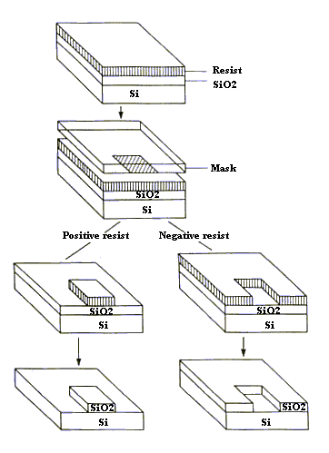
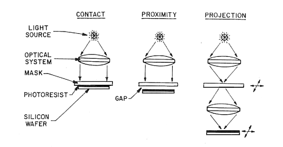
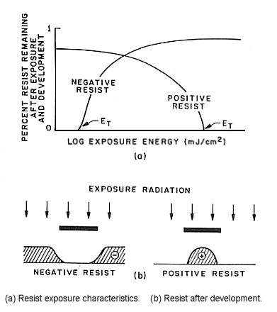

Photolithography is the process of transferring geometric shapes on a mask to the surface of a silicon wafer. The steps involved in the photolithographic process are wafer cleaning; barrier layer formation; photoresist application; soft baking; mask alignment; exposure and development; and hard-baking.
In the first step, the wafers are chemically cleaned to remove particulate matter on the surface as well as any traces of organic, ionic, and metallic impurities. After cleaning, silicon dioxide, which serves as a barrier layer, is deposited on the surface of the wafer. After the formation of the SiO2 layer, photoresist is applied to the surface of the wafer. High-speed centrifugal whirling of silicon wafers is the standard method for applying photoresist coatings in IC manufacturing. This technique, known as "Spin Coating," produces a thin uniform layer of photoresist on the wafer surface.
There are two types of photoresist: positive and negative. For positive resists, the resist is exposed with UV light wherever the underlying material is to be removed. In these resists, exposure to the UV light changes the chemical structure of the resist so that it becomes more soluble in the developer. The exposed resist is then washed away by the developer solution, leaving windows of the bare underlying material. In other words, "whatever shows, goes." The mask, therefore, contains an exact copy of the pattern which is to remain on the wafer.
Negative resists behave in just the opposite manner. Exposure to the UV light causes the negative resist to become polymerized, and more difficult to dissolve. Therefore, the negative resist remains on the surface wherever it is exposed, and the developer solution removes only the unexposed portions. Masks used for negative photoresists, therefore, contain the inverse (or photographic "negative") of the pattern to be transferred. The figure below shows the pattern differences generated from the use of positive and negative resist.

Negative resists were popular in the early history of integrated circuit processing, but positive resist gradually became more widely used since they offer better process controllability for small geometry features. Positive resists are now the dominant type of resist used in VLSI fabrication processes.
Soft-baking is the step during which almost all of the solvents are removed from the photoresist coating. Soft-baking plays a very critical role in photo-imaging. The photoresist coatings become photosensitive, or imageable, only after softbaking. Oversoft-baking will degrade the photosensitivity of resists by either reducing the developer solubility or actually destroying a portion of the sensitizer. Undersoft-baking will prevent light from reaching the sensitizer. Positive resists are incompletely exposed if considerable solvent remains in the coating. This undersoft-baked positive resists is then readily attacked by the developer in both exposed and unexposed areas, causing less etching resistance.
One of the most important steps in the photolithography process is mask alignment. A mask or "photomask" is a square glass plate with a patterned emulsion of metal film on one side. The mask is aligned with the wafer, so that the pattern can be transferred onto the wafer surface. Each mask after the first one must be aligned to the previous pattern.
Once the mask has been accurately aligned with the pattern on the wafer's surface, the photoresist is exposed through the pattern on the mask with a high intensity ultraviolet light. There are three primary exposure methods: contact, proximity, and projection. They are shown in the figure below.

In contact printing, the resist-coated silicon wafer is brought into physical contact with the glass photomask. The wafer is held on a vacuum chuck, and the whole assembly rises until the wafer and mask contact each other. The photoresist is exposed with UV light while the wafer is in contact position with the mask. Because of the contact between the resist and mask, very high resolution is possible in contact printing (e.g. 1-micron features in 0.5 microns of positive resist). The problem with contact printing is that debris, trapped between the resist and the mask, can damage the mask and cause defects in the pattern.
The proximity exposure method is similar to contact printing except that a small gap, 10 to 25 microns wide, is maintained between the wafer and the mask during exposure. This gap minimizes (but may not eliminate) mask damage. Approximately 2- to 4-micron resolution is possible with proximity printing.
Projection printing, avoids mask damage entirely. An image of the patterns on the mask is projected onto the resist-coated wafer, which is many centimeters away. In order to achieve high resolution, only a small portion of the mask is imaged. This small image field is scanned or stepped over the surface of the wafer. Projection printers that step the mask image over the wafer surface are called step-and-repeat systems. Step-and-repeat projection printers are capable of approximately 1-micron resolution.
One of the last steps in the photolithographic process is development. The figure below shows response curves for negative and positive resist after exposure and development.

At low-exposure energies, the negative resist remains completely soluble in the developer solution. As the exposure is increased above a threshold energy Et, more of the resist film remains after development. At exposures two or three times the threshold energy, very little of the resist film is dissolved. For positive resists, the resist solubility in its developer is finite even at zero-exposure energy. The solubility gradually increases until, at some threshold, it becomes completely soluble. These curves are affected by all the resist processing variables: initial resist thickness, prebake conditions, developer chemistry, developing time, and others.
Hard-baking is the final step in the photolithographic process. This step is necessary in order to harden the photoresist and improve adhesion of the photoresist to the wafer surface.